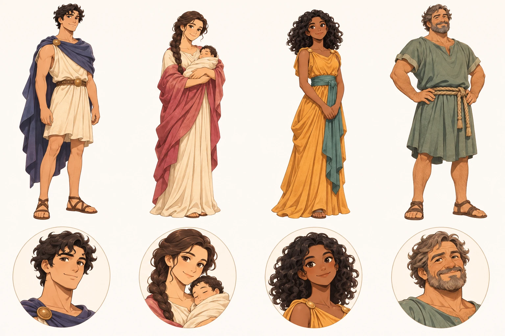
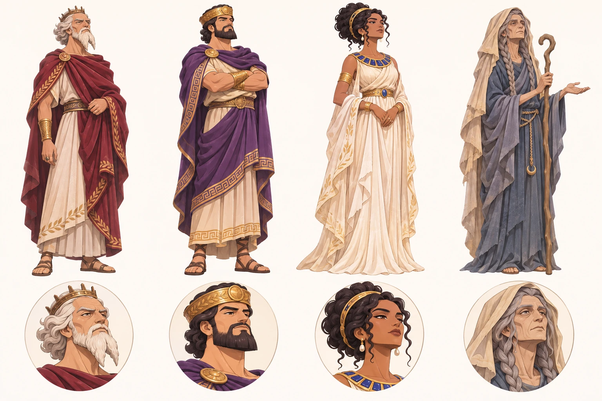
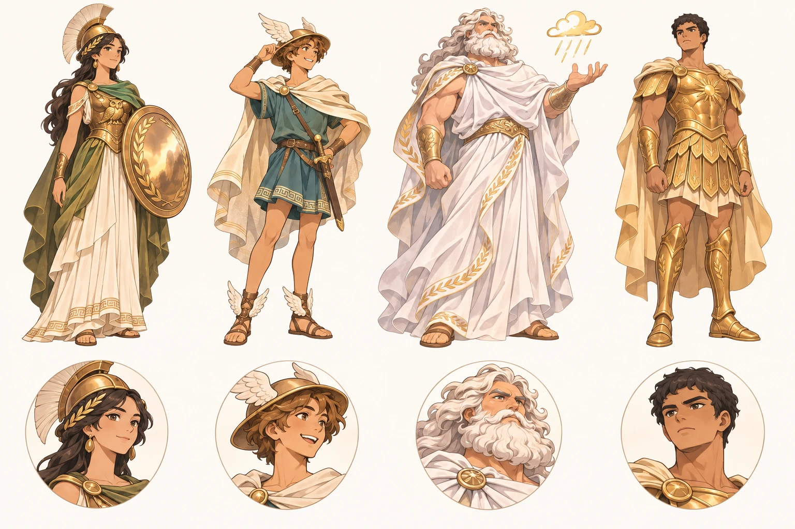
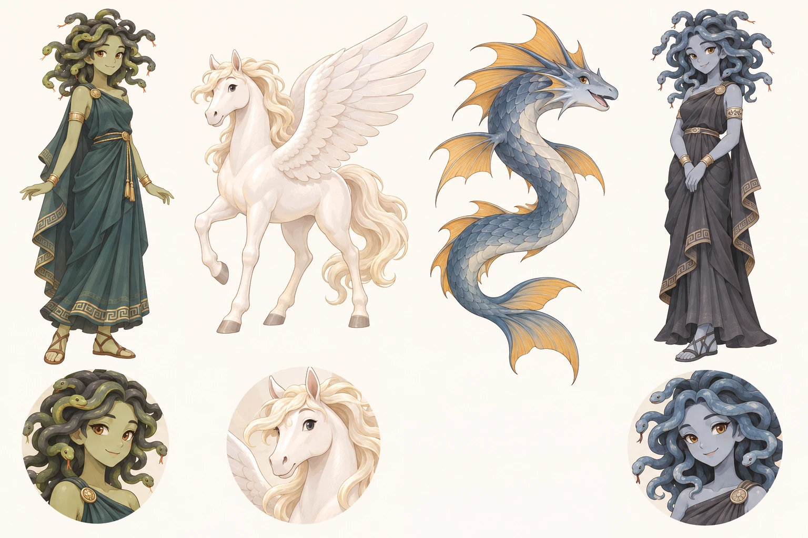
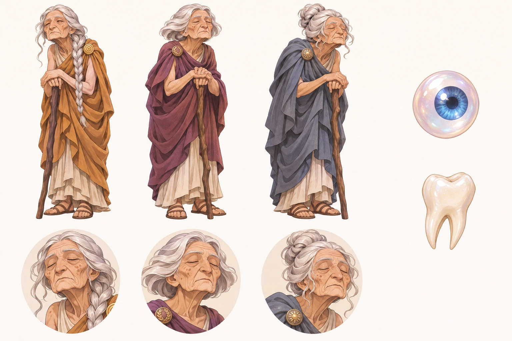

페르세우스
Perseus (PUR-see-us)
- 원문 속 역할
- 제우스와 다나에의 아들. 아기 때 바다를 건너고, 청년이 되어 메두사를 찾아간다.
- 삽화 제작 기준
- 아기는 검은 솜털과 밝은 리넨 포대기. 청년은 올리브빛 피부, 짧은 검은 곱슬머리, 갈색 눈, 크림색 튜닉과 남색 망토.
Character reference
영어 원문의 등장인물과 삽화에 반복해서 사용할 외형을 모았습니다.
이름 뒤 괄호는 영어식 발음입니다. 대문자로 쓴 음절을 강하게 읽으세요.
왼쪽부터 아래의 이름 순서대로 읽으세요. 이미지를 누르면 큰 그림을 열 수 있습니다.

이미지 저장 ↓
이미지 저장 ↓
이미지 저장 ↓
이미지 저장 ↓
이미지 저장 ↓머리 모양과 의상 색처럼 원문에 나오지 않는 외형은 삽화 제작 기준으로 정했습니다.
Perseus (PUR-see-us)
Danae (DAN-ay-ee)
Andromeda (an-DROM-ih-duh)
Dictys (DIK-tis)
Acrisius (uh-KRIZ-ee-us)
Polydectes (pol-ee-DEK-teez)
Cassiopeia (kas-ee-uh-PEE-uh)
The oracle
Athena (uh-THEE-nuh)
Hermes (HUR-meez)
Zeus (ZOOS)
Chrysaor (krih-SAY-or)
Medusa (mih-DOO-suh)
Pegasus (PEG-uh-sus)
The sea monster
The two immortal Gorgons (GOR-gunz)
The three Graeae (GREE-ee)
Sea gods and the sea god’s daughters
The king’s men and the crowd
얼굴과 체형은 유지하고, 이야기 속 사건에 맞춰 의상과 소품을 바꿉니다.
아기 페르세우스만 포대기를 쓴다. 다나에는 탑에서 마른 옷, 바다 위 상자에서는 젖은 옷이다. 세리포스에서 성장한 뒤에는 청년 외형을 쓴다.
3장에는 마법 도구가 아직 없다. 4장에 반사 방패, 칼, 날개 달린 샌들, 몸을 숨기는 모자, 마법 가방이 생긴다. 아테나는 방패, 헤르메스는 칼을 준다.
그라이아이의 눈을 돌려준 뒤 동굴에 도착한다. 동굴에는 고르곤이 셋이다. 페르세우스의 시선은 메두사의 얼굴이 아니라 방패 반사 쪽을 향한다.
6장 이후 메두사의 머리는 가방에 보관한다. 8장 안드로메다를 구할 때는 칼을 사용하고, 9장에 폴리덱테스 앞에서 가방을 연다.
딕티스가 왕이 되어도 얼굴과 체형은 같다. 10장 경기의 노인은 아크리시오스다. 폴리덱테스와 혼동하지 않는다.